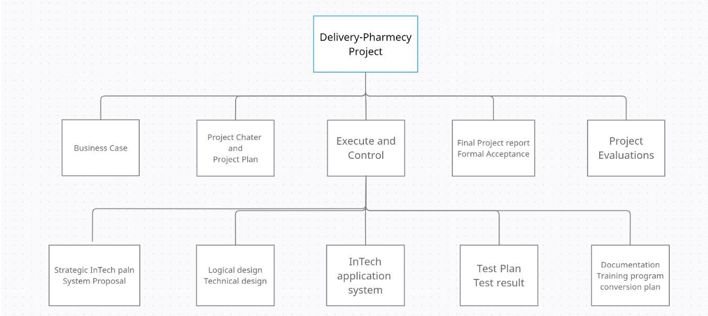
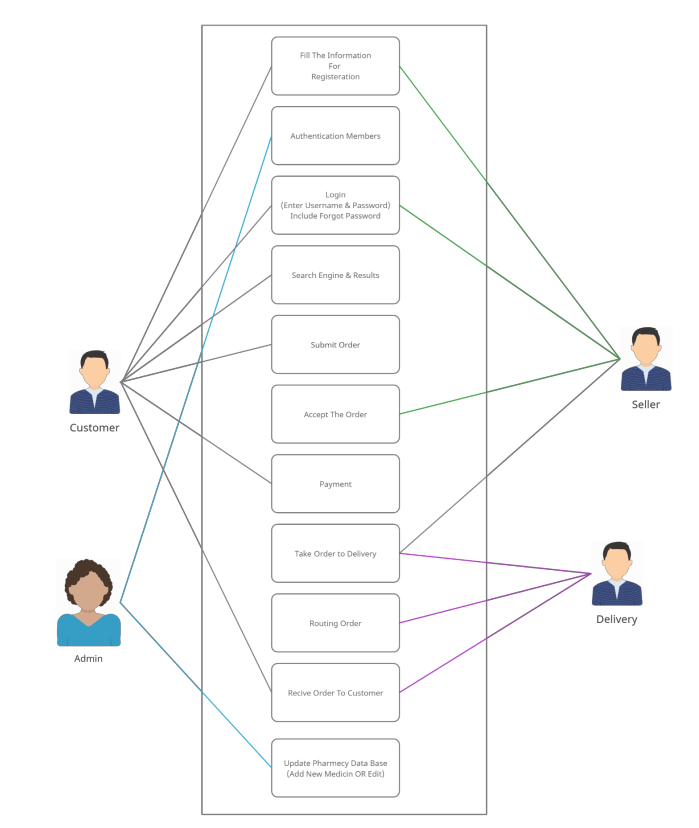

Intech Team
Based at Isfahan University of Technology
تیم اینتِک
سند مدیریت محدوده پروژه
نمودار ساختار اقالم تحویل دادنی )DSC:)
این پروژه بستری برای ایجاد ارتباط بین مراکز توزیع دارو و مکمل های غذایی و ورزشی در سطح شهر اصفهان ایجاد میکند. ما اپلیکیشن تحت وبی ارائه می کنیم که اشخاص بتوانند از طریق آن دارو های مورد نیاز خود در نزدیک ترین فروشگاه یا داروخانه را سفارش دهند و همچنین با بیشترین سرعت در درب منزل دریافت کنند.بسیاری از شهروندان در هنگام نیاز به دارو احتیاج به دسترسی به آن در اسرع وقت دارند. عموما داروخانه ها در مناطق شلوغ شهری قرار دارند. این برنامه به مشتریان این امکان را میدهد که نسخه یا داروی مورد نیاز خود را در سایت ثبت کنند.
: use-case نمودار
فرایندتغییر محدوده:
جهت ایجاد تغییرات در محدوده پروژه از طرف کارفرما، ابتدا باید درخواست کتبی به مدیر پروژه ارسال گردد. سپس در جلسه مدیر پروژه با تیم پروژه، تغییرات در میان گذاشته میشود و بحث برای امکان انجام تغییرات در مدت زمان تعیین شده پروژه و بر اساس منابع در دسترس، انجام میگیرد. در صورت توافق بر انجام تغییرات با اسپانسر مالی و مدیر منابع جلسه ای برگزار میشود تا نیازمندی های شرکت بر اساس تغییرات مشخص شود. در صورت موافقت با تغییرات، نامهای به صورت کتبی به کارفرما اعالم میشود که تغییرات در دست انجام است. در صورت موافقت نشدن با تغییرات نیز در نامه ای کتبی به کارفرما با ذکر کردن دالیل عدم موافقت به کار فرما اعالم میشود.